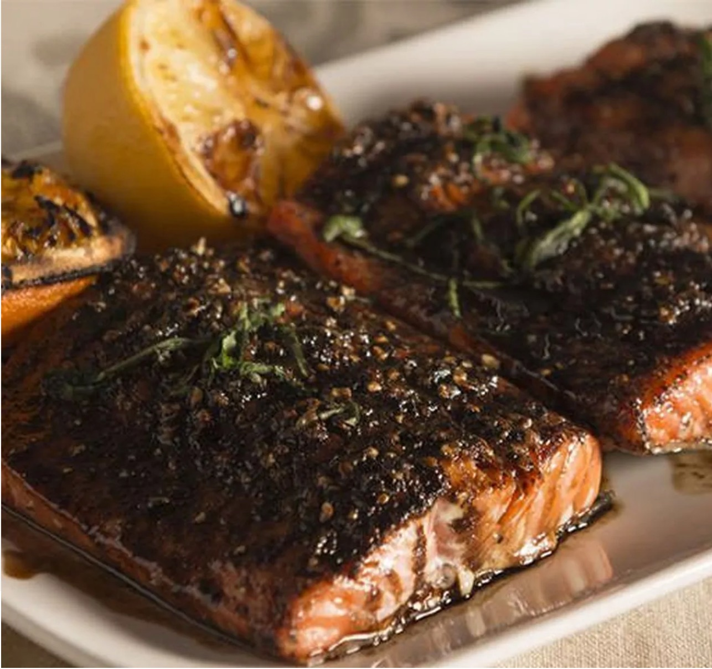

Salmon with Balsamic Glaze

This sweet and peppery dry rub fuses with the salmon to form a caramelization when grilled over high heat.
Drizzle the balsamic over top of that crisp, peppery sweetness, this opulent salmon dish it's simply delectable.
Ingredients
- 1 Tablespoon Fresh ground pepper
- 1 Tablespoon Sugar
- 2 Whole (8 oz) salmon fillets
- 2 Cup balsamic vinegar
- 1 Tablespoon Grand Marnier
- 1 Pinch Salt
Steps
- In a small bowl, combine the fresh ground pepper and sugar, and set aside.
- In a small heavy-bottomed saucepan over medium heat, add the balsamic vinegar and bring to a low boil.
Adjust the heat to maintain a steady simmer and reduce the balsamic vinegar until it resembles a syrup,
or until it can coat the back of a spoon, 15-20 minutes.
- Remove the glaze from the heat and let it cool. Add the Grand Marnier and pinch of salt, to taste.
- When ready to cook, set the Traeger temperature to 450°F and preheat with the lid closed for 15 minutes.
- Season the salmon evenly with the pepper and sugar mixture.
- Insert the probe horizontally into the center of the fish filet. Place flesh-side-down, directly on the grill grates.
Close the lid, and sear for 5 minutes. Turn the fish over and cook until desired doneness or the internal temperature
reaches 145°F, 10-15 minutes.
- Remove the filets from the grill. Drizzle with balsamic glaze and serve warm. Enjoy!